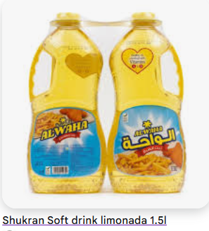
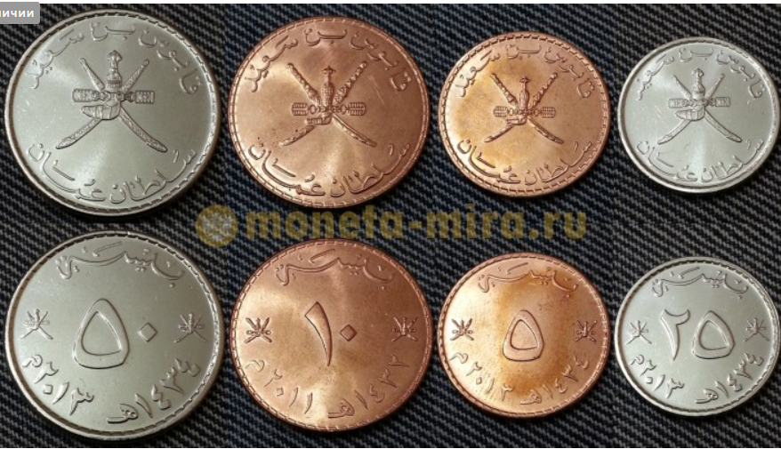
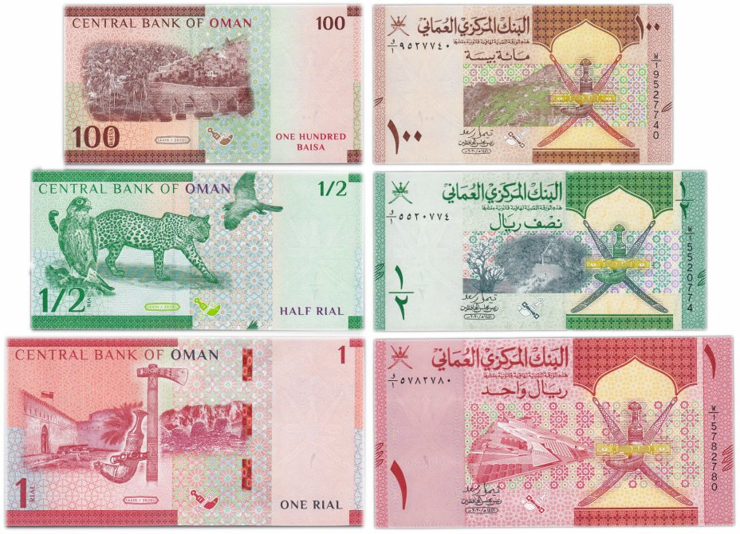

Авіа-поїздка · 30 грудня 2026 – 8 січня 2027 · з Загреба і назад у Загреб
08:35 – 14:15 · Автобус FlixBus (маршрут 060) Загреб → Відень, квиток куплено. Відправлення: Загреб, автобусна станція, Avenija Marina Držića 4. Прибуття: Відень, Erdberg (VIB), Erdbergstraße 200A. Місця 20A, 20B, 20C, 20E.
~14:30 – ~15:05 · Метро U3 (оранжева лінія, напрямок Ottakring) від Wien Erdberg, поруч з автобусною станцією, до Schweglerstraße, без пересадок (~20 хв), далі ~6 хв пішки до хостелу.
з 15:00 до 00:00 · Заселення в BeFree Hostel - Self-Service, Beingasse 13 Ecke Goldschlagstraße, 1150 Wien, +43 699 19232769. Ночівля 29 → 30 грудня, виселення 30.12 до 11:00.
~16:00 – 17:45 · Technisches Museum Wien mit Österreichischer Mediathek, Mariahilfer Straße 212, 1140 Wien (Google Maps). Сьогодні (вт) відкрито 9:00–18:00; пн–пт 9–18, сб, нд і свята 10–18; 24.12 до 15:00; 25.12 і 31.12 зачинено. Дорослий 18 €, до 19 років безкоштовно, для родини 2 × 18 € = 36 €. Дані зі сторонніх джерел, перевірте на technischesmuseum.at.
Вартість і тарифи автобуса та метро: розділ «Транспорт». Хостел: розділ «Проживання».
до 11:00 · Виселення з BeFree Hostel (Beingasse 13), виїзд з хостелу орієнтовно о ~09:45.
~09:45 – ~10:35 · Дорога до залізничного вокзалу Wien Hauptbahnhof: ~6 хв пішки до станції Schweglerstraße, метро U3 (напрямок Simmering) до Stephansplatz, пересадка на U1 (напрямок Oberlaa) до Hauptbahnhof.
~10:50 – ~11:10 · Потяг Railjet (або REX 7) Wien Hauptbahnhof → Flughafen Wien, ~15–20 хв у дорозі, відправлення приблизно кожні 30 хв (точний рейс перевірте на oebb.at).
до 11:30 · Бути в аеропорту Відня (VIE), за 2 години до вильоту.
13:30 – 22:40 · Переліт SalamAir OV812 Відень (VIE) → Маскат (MCT), прямий, 6 год 10 хв. Час прильоту місцевий (Маскат на 3 години попереду Відня).
Вартість і тарифи дороги до аеропорту: розділ «Транспорт». Квитки на літак: розділ «Транспорт».
Muscat Oasis Residences, Bowsher, Al Khuwair, Muscat: заселення 31.12 з 12:30 до 17:00 (8 ночей, виселення 08.01 12:00–13:00).
Телефон: +968 24 582558 · Докладніше в розділі «Проживання».
Увага: прильот у Маскат 30.12 о 22:40, а бронювання починається 31.12, тож ніч 30 → 31.12 поки не забезпечена житлом.
Програма дня і транспорт ще не додані.
Поки порожньо: сюди додаватимуться програма дня, транспорт і бронювання.
Поки порожньо: сюди додаватимуться програма дня, транспорт і бронювання.
Поки порожньо: сюди додаватимуться програма дня, транспорт і бронювання.
Поки порожньо: сюди додаватимуться програма дня, транспорт і бронювання.
Поки порожньо: сюди додаватимуться програма дня, транспорт і бронювання.
Поки порожньо: сюди додаватимуться програма дня, транспорт і бронювання.
Поки порожньо: сюди додаватимуться програма дня, транспорт і бронювання.
Розрахунок: прильот 22:00 плюс ~1 година на багаж і вихід з аеропорту, потім ~4–4,5 год дороги. Альтернатива: ночівля у Відні (готель біля аеропорту) і виїзд 09.01 вранці. Не обрано.

Shukran Soft drink limonada, 1,5 л.
Classic Malt · класичний безалкогольний солодовий напій з насиченим солодовим смаком.
Fruit Malt · безалкогольний солодовий напій з фруктовим відтінком (який саме фрукт, не вказано).
Обидва в скляних пляшках з кронен-корком, розраховані на ринок Оману й країн Перської затоки (GCC). Об'єм не вказаний. На сторінці виробника зазначено, що баланс смаку, солодкості й газації ще допрацьовують, тож у продажу напій може бути ще не скрізь. Джерело: soharfoodbev.com.

Монети в обігу: 5, 10, 25 і 50 байс (найчастіше трапляються 25 і 50).

Банкноти 100 байс, ½ ріала і 1 ріал · звичайні банкноти серії 2020 року (аверс і реверс).
Банкноти в обігу: 100 байс, ½, 1, 5, 10, 20 і 50 ріалів. Ювілейні випуски не рахуємо.
Фото банкнот: monetnik.ru.
| Рейс | Дата | Виліт | Приліт | Час у повітрі | Пересадки | Тариф |
|---|---|---|---|---|---|---|
| OV812 Відень → Маскат | середа, 30.12.2026 | 13:30 · Відень (VIE) | 22:40 · Маскат (MCT) | 6 год 10 хв | прямий | Lite |
| OV811 Маскат → Відень | п'ятниця, 08.01.2027 | 17:55 · Маскат (MCT) | 22:00 · Відень (VIE) | 7 год 5 хв | прямий | Lite |
Час місцевий для кожного аеропорту: Маскат на 3 години попереду Відня й Загреба (UTC+4 проти UTC+1). Перевізник SalamAir, бронювання від 09.11.2026.
| Пасажир | Тариф | Ручна поклажа | Зареєстрований багаж, OV812 (30.12) | Зареєстрований багаж, OV811 (08.01) | Місце | Харчування |
|---|---|---|---|---|---|---|
| Дорослий 1 | дорослий, Lite | 5 кг під сидіння | 1 місце 10 кг (куплено) | 1 місце 10 кг (куплено) | не обрано | не включено |
| Дорослий 2 | дорослий, Lite | 5 кг під сидіння | 1 місце 10 кг (куплено) | 1 місце 10 кг (куплено) | не обрано | не включено |
| Дитина 1 | дорослий тариф, Lite | 5 кг під сидіння | немає | немає | не обрано | не включено |
| Дитина 2 | дитячий тариф, Lite | 5 кг під сидіння | немає | немає | не обрано | не включено |
Разом зареєстрованого багажу: 2 місця по 10 кг на кожен рейс (20 кг на сім'ю), решта пасажирів літає лише з ручною поклажею 5 кг. Додатковий багаж 10 кг коштував 45,18 € за місце на рейс; суми дивіться нижче в цьому розділі.
| Стаття | Розрахунок | Сума |
|---|---|---|
| OV812, 30.12 | 4 пасажири × 218,02 € (тариф 171,80 + збір пасажира 23,47 + безпека Австрії 12,00 + безпека AT 10,75) | 872,08 € |
| OV811, 08.01 | 4 пасажири × 326,21 € (тариф 295,94 + аеропорт Оману 22,59 + безпека 2,26 + інфраструктурний збір 4,97 + додатковий збір 0,45) | 1 304,84 € |
| Додатковий багаж 10 кг, OV812 | дорослий 1: 45,18 € + адмін-збір 18,07 €; дорослий 2: 45,18 € | 108,43 € |
| Додатковий багаж 10 кг, OV811 | дорослий 1: 45,18 €; дорослий 2: 45,18 € | 90,36 € |
| Разом у підтвердженні | квитки 2 176,92 € + багаж 198,79 € | 2 375,71 € |
| Фактично сплачено | за вашими даними, на 104,29 € більше за підтвердження | 2 480 € |
| Дата | вівторок, 29.12.2026 |
| Перевізник і рейс | FlixBus (оператор: концесіонер FlixBus DACH GmbH), маршрут 060, напряму |
| Відправлення | 08:35 · Загреб, автобусна станція, Avenija Marina Držića 4, 10000 Zagreb |
| Прибуття | 14:15 · Відень, Erdberg (VIB), Erdbergstraße 200A, 1030 Wien |
| Час у дорозі | 5 год 40 хв |
| Пасажири і місця | 4 пасажири (2 дорослих, 2 дітей): 20A, 20B, 20C, 20E |
| Багаж | на кожного пасажира: мала ручна поклажа (7 кг, 42×30×18 см) і туристичний багаж (20 кг, 80×50×30 см) |
| Документи | дійсні посвідчення особи або паспорти; можливі прикордонні й візові перевірки |
| Вартість | 140,95 € за 4 пасажирів, квиток куплено |
| Дата | 29.12.2026, після прибуття автобуса (14:15) |
| Маршрут | лінія U3 (оранжева), напрямок Ottakring: від станції Wien Erdberg до станції Schweglerstraße, без пересадок |
| Посадка | Wien Erdberg, поруч з автобусною станцією Erdberg (VIB) |
| Вихід | Schweglerstraße, далі пішки до BeFree Hostel (Beingasse 13, 1150 Wien), орієнтовно 6 хв |
| Час у дорозі | орієнтовно 20 хв, без урахування пішої частини |
| Квиток | на одну поїздку: 2 дорослих по 3 € (онлайн) + 2 дитячих пільгових по 1,50 € (діти 10 і 13 років); в автоматі дорожче (дорослий 3,20 €). Тарифи Wiener Linien на 2026 рік; купити можна в застосунку WienMobil |
| Вартість | 9 € за 4 пасажирів |
| Дата | середа, 30.12.2026: виселення до 11:00, бути в аеропорту до 11:30 (виліт OV812 о 13:30) |
| Маршрут | пішки ~6 хв від BeFree Hostel до станції Schweglerstraße; метро U3 (напрямок Simmering) до Stephansplatz; пересадка на U1 (напрямок Oberlaa) до Wien Hauptbahnhof; потяг Railjet або REX 7 до Flughafen Wien |
| Орієнтовний графік | виїзд з хостелу ~09:45, на Wien Hauptbahnhof ~10:35, потяг ~10:50–11:00 (в дорозі ~15–20 хв, відправлення приблизно кожні 30 хв), в аеропорту ~11:10–11:20; запас часу до 11:30 невеликий, тож за можливості виїжджайте раніше |
| Метро (U3 + U1) | 2 дорослих по 3 € + 2 дитячих по 1,50 € (діти 10 і 13 років) = 9 €; тарифи Wiener Linien на 2026 рік |
| Потяг до аеропорту | ÖBB Railjet/REX 7, Hauptbahnhof → Flughafen Wien: дорослий 5,50 €, діти 6–14 років 2,80 €; 2 × 5,50 € + 2 × 2,80 € = 16,60 € |
| Вартість | 25,60 € за 4 пасажирів (метро 9 € + потяг 16,60 €) |
Квиток ÖBB до аеропорту може не включати проїзд метро, тому метро враховано окремо. Перед поїздкою перевірте тарифи й розклад на oebb.at та wienerlinien.at. Через ремонт колії S7 до жовтня 2027 року не доходить до Wien Mitte, тому потяг з Hauptbahnhof зручніший.
| Готель | BeFree Hostel - Self-Service |
| Адреса | Beingasse 13 Ecke Goldschlagstraße, 15, 1150 Wien, Austria GPS: 48°11.900′ N, 16°19.971′ E |
| Телефон | +43 699 19232769 |
| Заїзд | 29 грудня 2026 (вівторок), 15:00–00:00 |
| Виїзд | 30 грудня 2026 (середа), 00:00–11:00 |
| Склад | 1 номер, 1 ніч: 2 дорослих, 2 дітей (10 і 13 років) |
| Номер | «Хостел» на 4 ліжка (двоярусні), спільна ванна кімната; харчування не включено |
| Бронювання | Booking.com |
| Ціна | номер 97,20 € + ПДВ 10 % 9,72 € + міський податок 5 % 4,86 € = 111,78 €; з цієї суми 7,78 € сплачує Booking.com |
| Скасування | безкоштовно за 3 дні до заїзду (до 26.12); пізніше штраф у повній вартості бронювання |
| Готель | Muscat Oasis Residences (سكن واحة مسقط) |
| Адреса | Bowsher, Al Khuwair, Muscat, 112, Oman GPS: 23°34.905′ N, 58°24.572′ E |
| Телефон | +968 24 582558 |
| Заїзд | 31 грудня 2026 (четвер), 12:30–17:00 |
| Виїзд | 8 січня 2027 (п'ятниця), 12:00–13:00 |
| Склад | 1 апартамент, 8 ночей: 2 дорослих, 2 дітей (10 і 13 років) |
| Номер | Апартаменти з 2 спальнями, власна ванна кімната, балкон, кухня, пральна машина, кондиціонер; харчування не включено |
| Ціна | апартамент 529 € + ПДВ 5 % 31 € + муніципальний збір 5 % 29 € + сервісний збір 8 % 42 € + туристичний збір 4 % 21 € = 652 € (651,51 € точно; 279,576 OMR). Знижка Booking.com 42,28 € (18,144 OMR), до сплати 609,23 € |
| Скасування | безкоштовно до 18:00 у день заїзду (31.12); пізніше штраф 50 % вартості проживання; незаїзд = штраф у повній вартості |
Бронювання починається 31.12, а ви прилітаєте 30.12 о 22:40: ніч 30 → 31.12 потрібно забронювати окремо або домовитися про ранній заїзд.
| Стаття | Вже сплачено | Залишилось |
|---|---|---|
| Авіаквитки SalamAir Відень ↔ Маскат, 4 пасажири, разом з багажем; розбиття в розділі «Транспорт» | 2 480 € | — |
| Автобус Загреб → Відень, 29.12 FlixBus, 4 пасажири | 140,95 € | — |
| Хостел у Відні, 29 → 30.12 BeFree Hostel, 1 ніч, 4 гості; розбиття в розділі «Проживання» | — | 111,78 € |
| Метро у Відні, 29.12 U3, Erdberg → Schweglerstraße, 4 особи: 2 дорослих по 3 € + 2 дитячі по 1,50 € | — | 9 € |
| Дорога до аеропорту Відня, 30.12 метро U3 + U1 9 € і потяг Railjet/REX 7 16,60 €, 4 пасажири | — | 25,60 € |
| Житло в Омані, 31.12 → 08.01 Muscat Oasis Residences, 8 ночей, 4 гості; ніч 30 → 31.12 не включена; розбиття в розділі «Проживання» | — | 609,23 € |
| Їжа | — | ще не розраховано |
| Пам'ятки і розваги Technisches Museum Wien, 29.12: 2 дорослих по 18 €, діти до 19 років безкоштовно; пам'ятки в Омані ще не розраховані | — | 36 € |
| Транспорт в Омані трансфери, оренда авто | — | ще не розраховано |
| Дорога Відень → Загреб авто, автобус чи потяг; платні ділянки, паркінг | — | ще не розраховано |
| Візи, дозволи, страховка | — | ще не розраховано |
| Разом | 2 620,95 € | 791,61 € |
| Загалом: сплачено + залишилось 2 620,95 € + 791,61 €; їжа, пам'ятки й транспорт в Омані, дорога Відень → Загреб і візи/страховка ще не розраховані | 3 412,56 € | |
Сума 2 480 € вказана за фактом оплати за перельоти. У підтвердженні бронювання SalamAir стоїть 2 375,71 € (різниця 104,29 €).